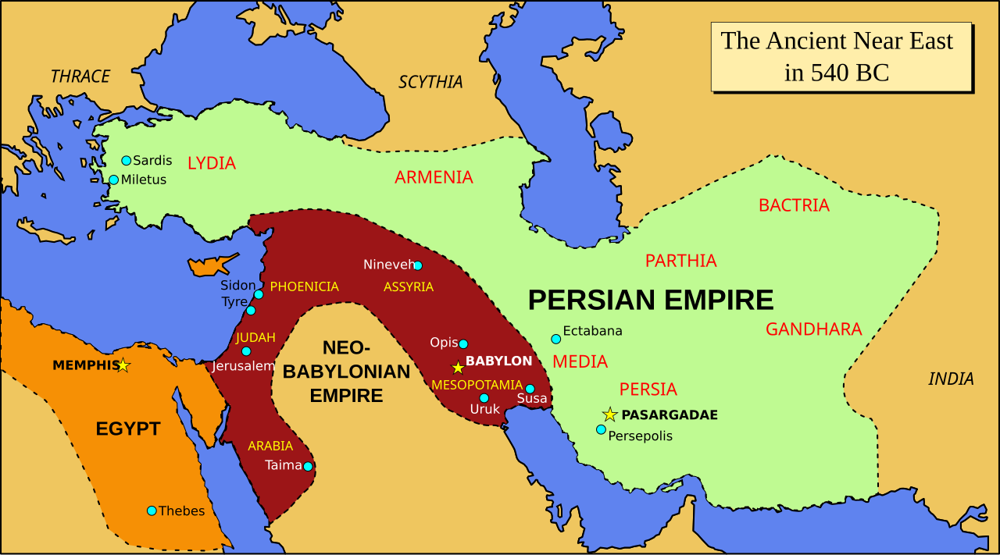
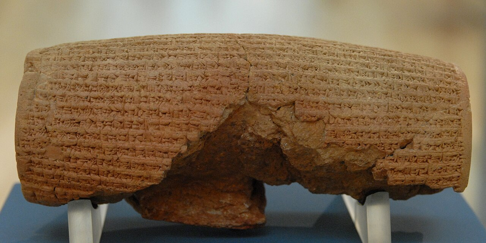

1. O cenário histórico: exílio e mudança de império
O livro de Isaías está associado, na tradição religiosa, ao profeta Isaías de Jerusalém, atuante no século VIII a.C. Muitos pesquisadores distinguem, porém, os capítulos 40–55 como textos ligados ao século VI a.C., quando parte da população de Judá vivia sob domínio babilônico. Essa seção é frequentemente chamada de Segundo Isaías ou Deutero-Isaías. A extensão e os detalhes da formação do livro continuam debatidos.
A diferença de época é importante: Isaías 33 se relaciona a crises de Judá diante da Assíria; Isaías 41 fala a uma comunidade marcada pelo exílio babilônico e pela ascensão da Pérsia. A mensagem não nasce apenas do medo de uma invasão iminente: envolve a pergunta sobre como um povo pode continuar a existir depois de perder sua capital, o templo, a autonomia política e o vínculo cotidiano com sua terra.
Linha do tempo aproximada
- 701 a.C.: Senaqueribe, rei da Assíria, conduz campanha contra Judá; Jerusalém sofre ameaça, enquanto Laquis é conquistada.
- 597 a.C.: a Babilônia deporta o rei Joaquim e parte da elite de Judá.
- 587/586 a.C.: Jerusalém e o Primeiro Templo são destruídos por forças de Nabucodonosor II; seguem-se mortes, deslocamentos e reorganização social.
- Meados do século VI a.C.: Ciro II expande o Império Persa e derrota a Babilônia.
- 539 a.C.: Babilônia passa ao domínio persa.
- A partir de 538 a.C., aproximadamente: políticas persas permitem que grupos deportados retornem e reorganizem cultos e comunidades; o processo foi gradual e não significou retorno de todos.


O chamado Cilindro de Ciro registra uma política régia de restauração de santuários e retorno de populações, mas não menciona especificamente os judeus. A Bíblia interpreta o retorno e a restauração dentro de sua própria narrativa teológica. Fontes diferentes iluminam ângulos diferentes.
O que o exílio ameaçava
Politicamente: Judá perdera autonomia e estava submetida a uma potência estrangeira. Socialmente: famílias, propriedades, instituições e meios de vida foram alterados. Religiosamente: a destruição do templo provocava questões sobre a aliança e a presença de Deus. Identitariamente: a comunidade precisava preservar memória, língua, práticas e pertencimento longe do território de seus antepassados.
Não é apropriado diagnosticar uma população antiga com categorias clínicas atuais. Podemos, com prudência, reconhecer que guerra, deportação, perda e incerteza são experiências humanas severas, capazes de abalar a confiança e a percepção de futuro.
2. Isaías 41 em seus blocos
Versículos 1–4 — As nações diante do tribunal
As nações são convocadas a apresentar-se; a passagem pergunta quem suscitou o conquistador que avança de vitória em vitória. No horizonte histórico mais comum, essa figura é associada a Ciro, mencionado nominalmente nos capítulos 44–45. Isaías 41 ainda não o nomeia.
A afirmação teológica é que a ascensão de um império não foge ao governo de Deus. Isso não transforma conquista em bondade moral nem apaga a violência. O texto procura oferecer ao povo exilado uma interpretação em que o poder imperial não seja a autoridade última.
Versículos 5–7 — Medo coletivo e ídolos sustentados
As nações veem os acontecimentos e ficam alarmadas. Artesãos encorajam uns aos outros e reforçam as imagens que fabricam, fixando-as para que não caiam. A ironia profética contrasta ídolos dependentes de seus construtores com o Deus que, segundo a fé de Israel, conduz a história.
Não se deve tirar daí a conclusão de que cooperação humana é inútil. O alvo é a confiança religiosa depositada em objetos que não conseguem sustentar nem a si mesmos. Como analogia moderna, podemos perguntar se dinheiro, controle, reputação ou certeza absoluta recebem uma confiança que não conseguem suportar.
Versículos 8–10 — Israel chamado e consolado
O poema muda de destinatário: Israel é chamado servo, descendência de Abraão e povo escolhido. Deus relembra que o chamou de terras distantes e não o rejeitou. Em seguida vem a ordem de não temer, sustentada por razões: “eu sou contigo”, “eu sou teu Deus”, “eu te fortaleço”, “eu te ajudo”, “eu te sustento”. O pertencimento antecede a coragem.
Versículos 11–16 — O medo dos adversários e a fragilidade do povo
Os adversários de Israel serão envergonhados e reduzidos a nada. Israel, por sua vez, é descrito como verme pequeno, mas recebe a promessa de ajuda divina. A imagem não é de autossuficiência: a comunidade frágil pode participar de uma transformação que excede suas forças. Metáforas de debulha e montanhas reduzidas a palha expressam reversão extraordinária.
Versículos 17–20 — Água no deserto
Os pobres e necessitados procuram água e não encontram; Deus responde abrindo rios e fontes em lugares secos, fazendo florescer árvores no deserto. A imagem comunica provisão e renovação em cenário de privação. A criação toda se torna sinal de que o Deus de Israel pode fazer surgir vida onde parecia haver apenas aridez.
Versículos 21–29 — O desafio aos ídolos
Os ídolos são desafiados a anunciar acontecimentos e demonstrar poder. A passagem termina afirmando sua incapacidade. O contraste não é um debate neutro sobre esculturas: é uma polêmica contra poderes religiosos e políticos incapazes de oferecer conhecimento, justiça ou salvação. O capítulo inteiro questiona onde a comunidade deposita sua confiança.
3. Isaías 41:10 em profundidade
“Não temas, porque eu sou contigo; não te assombres, porque eu sou o teu Deus; eu te fortaleço, e te ajudo, e te sustento com a minha destra fiel.” (tradução de sentido; versões variam)
O destinatário original: o “tu” singular pode dirigir-se ao Israel coletivo como uma pessoa poética. O verso está ligado aos versículos 8–9 e à linguagem de eleição e aliança. A aplicação a um indivíduo é possível dentro de tradições de fé, mas deve ser reconhecida como apropriação devocional posterior, não como apagamento do destinatário histórico.
“Não temas” — uma ordem ou uma promessa?
A frase não precisa significar “não sinta medo”. No fluxo do texto, ela é acompanhada por razões relacionais: Deus está com o povo, é seu Deus, fortalece, ajuda e sustenta. O consolo não depende de negar o perigo ou de exigir uma emoção imediata. Pode ser entendido como convite a não deixar que o medo tenha a palavra final sobre identidade e ação.
Isso não transforma a passagem numa técnica clínica. Para a psicologia contemporânea, reconhecer o medo e buscar apoio pode ser mais realista do que tentar suprimi-lo. Na leitura religiosa, a presença divina é uma afirmação teológica; não é apenas metáfora para autoconfiança.
“Eu sou contigo” — presença e pertencimento
A primeira resposta ao medo é vínculo. Israel é lembrado de que não foi esquecido nem abandonado. “Eu sou teu Deus” reafirma aliança e identidade comunitária. Filosoficamente, isso contrasta com uma visão em que cada pessoa precisa ser inteiramente autossuficiente; psicologicamente, pode dialogar com a importância de relações confiáveis e apoio social. Esses paralelos não são equivalentes: o texto fala da relação de aliança com Deus.
“Eu te fortaleço” — capacidade para atravessar
A promessa não diz que o povo já é invulnerável. O verbo coloca a força como algo recebido. Uma leitura contemporânea pode compreender que coragem não é ausência de limite: pode incluir aceitar ajuda, aprender, descansar e dar o próximo passo possível.
“Eu te ajudo” — auxílio em ação
Ajuda não é apenas elogio ou aprovação; sugere intervenção em favor do povo. A imagem impede que a passagem seja reduzida a “basta querer”. Para hoje, pedir apoio humano concreto pode ser compatível com uma postura de fé, embora o texto não especifique os meios modernos dessa ajuda.
“Eu te sustento” — continuidade
Sustentar é imagem de amparo e firmeza ao longo do caminho. O verso não descreve um instante mágico em que toda aflição desaparece. Sua promessa se insere numa esperança coletiva de preservação e restauração.
“Minha destra de justiça”
A mão direita simboliza força e ação eficaz. A expressão hebraica pode ser traduzida como “destra da minha justiça” ou “destra vitoriosa”, conforme a tradição de tradução. A ideia não é mera força bruta: o amparo está ligado ao caráter justo de Deus. A promessa confronta a aparente supremacia do império e reafirma que a injustiça não é o critério final da história.
4. O medo: função e limites
O medo é uma emoção de proteção. Ele mobiliza atenção diante de perigo, mas pode também antecipar ameaças e estreitar o campo de visão. Uma resposta cuidadosa não precisa escolher entre obedecer cegamente ao medo e fingir que ele não existe. Pode nomear o que está acontecendo, distinguir fatos de previsões e buscar uma ação segura e coerente com valores.
O capítulo oferece uma narrativa coletiva: o povo não é convidado a produzir sozinho a própria segurança; recebe uma palavra de presença. A psicologia pode dialogar com temas de apoio, vínculo e enfrentamento, mas não deve substituir a teologia do texto nem tratar a fé como tratamento clínico.
Também é importante não usar “não temas” para repreender quem sente ansiedade, luto ou medo. Sentir medo não prova fracasso moral ou espiritual. Em situações de violência, doença ou risco, buscar proteção e ajuda profissional é uma resposta responsável.
5. Diálogo com a filosofia
Epicteto e o controle: a distinção estoica entre o que depende de nossas escolhas e o que não depende ajuda a refletir sobre limites do controle. Isaías, porém, coloca a segurança última na fidelidade de Deus, não somente no governo racional de si. A convergência é parcial.
Aristóteles e o hábito: a coragem e outras virtudes são formadas pela prática, não apenas por declarações. A leitura contemporânea pode perguntar qual pequeno ato de coragem ou justiça é possível hoje. A estrutura teológica da aliança, contudo, difere da ética aristotélica.
Kierkegaard e a angústia: a reflexão existencial sobre possibilidade e escolha pode ajudar a pensar a experiência de incerteza. Kierkegaard escreve muitos séculos depois e não explica o sentido histórico original de Isaías.
Viktor Frankl: seus escritos sobre sentido diante do sofrimento podem dialogar com a busca por esperança em situações extremas. Isso não permite comparar diretamente o exílio antigo com experiências modernas específicas nem sugerir que o sofrimento seja bom ou necessário.
Esses pensadores são interlocutores, não comentaristas do capítulo. As semelhanças iluminam perguntas; as diferenças preservam a honestidade intelectual.
6. Paralelos com o presente
| Questão | Isaías 41 | Possível pergunta atual |
|---|---|---|
| Insegurança | Exílio, perda de autonomia e incerteza política | O que fazemos quando o futuro parece fora de nosso controle? |
| Poder | Ascensão de impérios e mudança de domínio | Como preservar dignidade em sistemas que parecem maiores que nós? |
| Identidade | Povo chamado e lembrado pela aliança | O que permanece de nós quando cargos, papéis ou lugares mudam? |
| Confiança | Crítica a ídolos sustentados por mãos humanas | Em que depositamos uma confiança absoluta que pode falhar? |
| Esperança | Água e vida no deserto | Que apoio e ação tornam possível imaginar o próximo passo? |
A humanidade moderna possui capacidades médicas, científicas e tecnológicas extraordinárias. O progresso é real, embora distribuído de modo desigual. Ele não elimina automaticamente medo, desejo de controle, luto ou necessidade de pertencimento. A comparação cuidadosa observa temas persistentes sem dizer que nossa época é igual ao exílio babilônico.
7. Sete princípios e um exercício de sete dias
- O medo merece ser escutado, mas não precisa decidir tudo. Nomeie o perigo e verifique quais partes são fatos e quais são antecipações. Risco: minimizar perigos reais.
- Coragem pode começar com companhia. Identifique alguém confiável a quem pedir presença ou ajuda. Risco: concluir que pedir apoio é fraqueza.
- Identidade é maior que uma circunstância. Relembre valores e vínculos que permanecem mesmo quando a rotina muda. Risco: negar perdas que precisam ser reconhecidas.
- Força não é autossuficiência. Receber ajuda, descansar e aprender também são formas de atravessar. Risco: passividade ou espera indefinida por uma solução externa.
- Esperança não é previsão garantida. Ela pode sustentar uma ação pequena sem prometer seu resultado. Risco: culpar-se quando as coisas não melhoram rapidamente.
- Confiança não exige fechar os olhos. Combine fé, prudência, proteção e busca de informação. Risco: confundir fé com imprudência.
- Transformação se vê em ações repetidas. Escolha um passo modesto e observável alinhado a um valor. Risco: transformar o exercício em cobrança perfeccionista.
Um exercício leve para sete dias
Não é uma prova de fé nem uma tarefa para cumprir perfeitamente. Reserve alguns minutos por dia, se isso lhe fizer bem:
- Dia 1 — Nomear: escreva uma preocupação e separe o que sabe do que teme que aconteça.
- Dia 2 — Pertencimento: recorde uma pessoa, comunidade ou convicção que lhe oferece apoio.
- Dia 3 — Ajuda: peça uma ajuda específica ou ofereça apoio concreto a alguém.
- Dia 4 — Limite: escolha uma coisa que não pode controlar e outra que está ao seu alcance.
- Dia 5 — Coragem: faça um passo pequeno e seguro em direção a algo importante.
- Dia 6 — Descanso: permita-se uma pausa sem tratá-la como fracasso.
- Dia 7 — Revisão: observe o que ajudou, agradeça o que foi possível e escolha um próximo passo realista.
8. Perguntas de reflexão
- Quando você ouve “não temas”, isso lhe oferece consolo ou soa como cobrança? O que no restante do versículo muda essa leitura?
- Que medo precisa ser reconhecido e que ajuda concreta poderia acompanhá-lo?
- Como manter esperança sem exigir de si a certeza de que tudo terminará como deseja?
Síntese: Isaías 41:10 fala primeiro a um povo deslocado e vulnerável. Sua força está na sequência: “não temas” é sustentado por “estou contigo”, “sou teu Deus”, “fortaleço”, “ajudo” e “sustento”. A coragem nasce dentro de uma relação e de uma esperança compartilhada.
9. Notas e referências
Leitura baseada em Isaías 41 em traduções bíblicas correntes. Para aprofundar: introduções acadêmicas ao livro de Isaías e aos capítulos 40–55; estudos históricos sobre o exílio babilônico e o Império Persa; materiais de museus sobre o Cilindro de Ciro. A datação é aproximada, e os detalhes da formação literária são objeto de debate. O Cilindro de Ciro não menciona especificamente os judeus.
As interpretações teológicas variam entre tradições judaicas, cristãs e histórico-críticas. O texto bíblico não deve ser tratado como diagnóstico psicológico nem como garantia de cura ou de ausência de sofrimento.
↑ Voltar ao índice do capítulo ← Voltar ao índice dos estudos